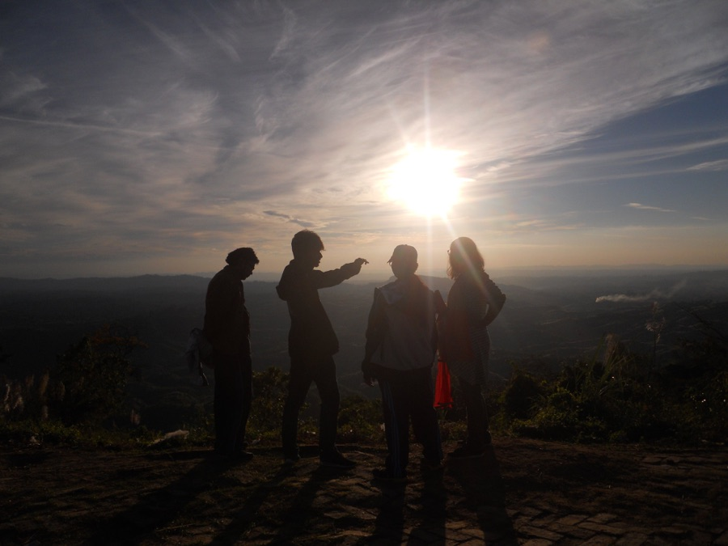

I build and study tools that help people work with complex data:
from AI agents for scientific exploration to
accessible chart descriptions and visual interfaces
for clinicians. My work brings together system building and studies
with scientists, clinicians, and blind and low-vision readers.
Previously, I studied Computer Science and Engineering at
BUET and worked on the data
science team at IQVIA.
Md Saidul Hoque Anik, Nuwaisir Rabi,
Ishrat Jahan Eliza, Md Hasibul Husain Hisham,
Ajwad Akil, Abir Mohammad Turza, Farhan Feroz, Fahim Morshed,
Nazmus Sakib, Jannatun Noor, Sriram Chellappan, A. B. M. Alim Al
Islam
Ishrat Jahan Eliza, Md Hasibul Husain Hisham,
Mohammad Nuwaisir Rahman, Ajwad Akil, Abir Mohammad Turza, Fahim
Morshed, Nazmus Sakib, Sriram Chellappan, A. B. M. Alim Al Islam
2024 – presentCultural SecretaryBangladesh Student Association, University of Utah
2020 – 2021President, BUET Dance Club
Away from the screen
A little beyond research.
Dance has always been part of my life, from leading the BUET Dance
Club to helping bring people together through the Bangladesh Student
Association at Utah.
I also love exploring new places and cultures. Living in Utah has
introduced me to hiking: a 16.7-mile Grand Canyon hike and the
14.2-mile Mt. Timpanogos summit are two favorites.
Dance Trails &
travel Community

A little room for exploring.
Let's connect
Good research starts with a conversation.
Interested in human-centered AI, accessible visualization, or
scientific data? I'd love to hear from you.